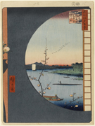
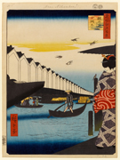
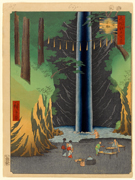

100 views Edo, View From Massaki of Suijin Shrine, Uchigawa Inlet, and Sekiya

100 views Edo, part of the series One Hundred Famous Views of Edo

100 views Edo, Fudo Falls, Oji, 1857, no. 049, part 2: Summer
Fudo Falls, Oji

Utagawa Hiroshige (歌川広重) (1797–1858)
Part of the series One Hundred Famous Views of Edo, no. 049, part 2: Summer